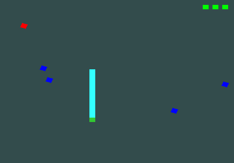

Layoffs Data Cleaning
& EDA (MySQL)
Globális technológiai leépítési adatok tisztítása, duplikáció- és null-kezelése MySQL-ben, majd mélyreható trendelemzés ablakfüggvényekkel és CTE-kkel.

Globális technológiai leépítési adatok tisztítása, duplikáció- és null-kezelése MySQL-ben, majd mélyreható trendelemzés ablakfüggvényekkel és CTE-kkel.
ASOS termékadatok tisztítása és feldolgozása Pandas segítségével: készlethiány-arány és kieső árbevétel modellezése, valamint vizualizáció Seabornnal.

Nyers kérdőíves felmérés tisztítása Power Query-vel, majd interaktív dashboard felépítése a fizetések, programozási nyelvek és munka-magánélet egyensúly elemzésére.

Demográfiai ügyféladatok tisztítása, dinamikus korcsoport-oszlopok kialakítása IF függvényekkel, valamint interaktív értékesítési dashboard Pivot táblákkal és szeletelőkkel.
Egy csonkított ikozaéderen alapuló 3D-s sakkváltozat állapotgépe és lépésvalidációs játékmotorja objektumorientált C++ architektúrában megvalósítva.

Egy egyedi, 2D-s Snake játék modern OpenGL (Core Profile) és C++ használatával. A klasszikus játékmenetet olyan extra mechanikákkal egészíti ki, mint a pálya előzetes szerkesztése (akadályok lerakása), dinamikus színezés a pálya különböző zónáiban, valamint extra csapdák (kék kockák) és életrendszer (zöld kockák)

Egy 3D-s, interaktív naprendszer szimuláció, amely C++ és modern OpenGL (Core Profile) használatával készült. A projekt egy szabadon mozgatható belső nézetes kamerarendszert, textúrázott bolygómodelleket, dinamikus világítást és alapvető ütközésvizsgálatot tartalmaz.